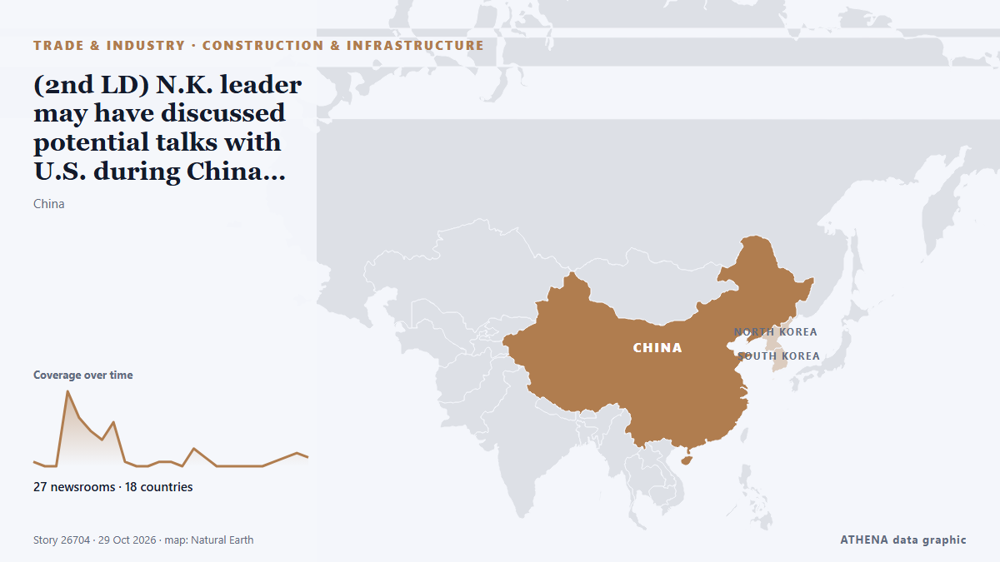

(2nd LD) N.K. leader may have discussed potential talks with U.S. during China visit: spy agency

A Chinese delegation arrived in North Korea on Thursday ahead of the anniversary of China’s entry into the Korean War, amid an unconfirmed report that DPRK officials are visiting China to prepare for… من NK News
نشرته بشكل مستقل 26 مصدرًا في 18 دولة منذ 23 أكتوبر، وأول من نشره NK News؛ والتغطية هدأت. يقدّر ATHENA الخطر بأنه معتدل (3.2/10)، ويعود ذلك أساسًا إلى خطورة الضرر الموصوف ونطاقه الجغرافي والقطاعي. الثقة 86٪ (مرتفعة)، وعدد المصادر المستقلة المؤكِّدة: 26، بمتوسط موثوقية للمصادر يبلغ 76٪. وسائل الإعلام حسب البلد: كوريا الجنوبية (16), كوريا الشمالية (3), باكستان (3). التغطية: من 23 أكتوبر إلى 25 أكتوبر، 40 ساعة.
لماذا يهم: ينتقل الاضطراب في التجارة أو الصناعة أو البنية التحتية عبر سلاسل الإمداد فيغيّر التكاليف ومواعيد التسليم في أماكن بعيدة.
ما الذي تغيّر: 4 تقارير جديدة من 2 غرف أخبار خلال 24 ساعة حتى 29 أكتوبر.
العنوان الأول: N. Korean leader arrives in China via new border bridge: Yonhap
تُعرض العناوين بالإنجليزية كما نُشرت.
نظرة سريعة
اختير وقُيِّم وكُتب وفق منهجية ATHENA المنشورة. لا يتدخل أي محرر في الأحداث بعينها. كيف يُنتَج ›
| 23 Oct 09:32 UTC | 1 |
|---|---|
| 23 Oct 15:32 UTC | 0 |
| 23 Oct 21:32 UTC | 0 |
| 24 Oct 03:32 UTC | 17 |
| 24 Oct 09:32 UTC | 11 |
| 24 Oct 15:32 UTC | 8 |
| 24 Oct 21:32 UTC | 6 |
| 25 Oct 03:32 UTC | 10 |
| 25 Oct 09:32 UTC | 1 |
| 25 Oct 15:32 UTC | 0 |
| 25 Oct 21:32 UTC | 0 |
| 26 Oct 03:32 UTC | 1 |
| 26 Oct 09:32 UTC | 0 |
| 26 Oct 15:32 UTC | 0 |
| 26 Oct 21:32 UTC | 3 |
| 27 Oct 03:32 UTC | 2 |
| 27 Oct 09:32 UTC | 0 |
| 27 Oct 15:32 UTC | 0 |
| 27 Oct 21:32 UTC | 0 |
| 28 Oct 03:32 UTC | 0 |
| 28 Oct 09:32 UTC | 0 |
| 28 Oct 15:32 UTC | 1 |
| 28 Oct 21:32 UTC | 0 |
| 29 Oct 03:32 UTC | 2 |
| 29 Oct 09:32 UTC | 1 |
| 24 Oct 06:11 UTC | 0.0 |
|---|---|
| 24 Oct 12:54 UTC | 1.3 |
| 25 Oct 05:48 UTC | 3.7 |
| 29 Oct 10:33 UTC | 3.2 |
لماذا هذه الأرقام
الأهمية
الخطر
الثقة
التغطية — من نشر الخبر ومتى
العنوان كما نُشر · يفتح الأصل- NK News · كوريا الشماليةChinese officials visit North Korea to mark China’s entry into Korean War
- Yonhap (English) · كوريا الجنوبية(URGENT) N. Korea's Kim arrives in China's border city of Dandong via newly opened bridge
- Yonhap (English) · كوريا الجنوبيةN. Korea's Kim arrives in China's Dandong via newly opened bridge: gov't source
- NK News · كوريا الشماليةNorth Korea’s Kim Jong Un visits Chinese border city of Dandong: Xinhua
- The Korea Times · كوريا الجنوبيةN. Korea's Kim arrives in China's Dandong via newly opened bridge: gov't source
- Yonhap (English) · كوريا الجنوبية(LEAD) N. Korea's Kim arrives in China's Dandong via newly opened bridge: gov't source
- Korea Herald · كوريا الجنوبيةKim Jong-un makes surprise visit to China via new Yalu River bridge
- Al Jazeera English · قطرNorth Korea’s Kim Jong Un visits China via newly opened bridge
- Arab News · المملكة العربية السعوديةNorth Korean leader Kim Jong Un visits China to inaugurate a new cross-border bridge
- ABC News (International) · الولايات المتحدةNorth Korean leader Kim Jong Un visits China, South Korean news agency reports
- DW English · ألمانياNorth Korean leader Kim Jong Un travels to Chinese border city via newly opened bridge
- Mainichi (English) · اليابانN. Korean leader arrives in China via new border bridge: Yonhap
- Yonhap (English) · كوريا الجنوبية(URGENT) N. Korea's Kim appears to be planning to return home Saturday after visiting China's Dandong: ruling party source
- Yonhap (English) · كوريا الجنوبية(2nd LD) N. Korea's Kim arrives in China's Dandong via newly opened bridge
- Yonhap (English) · كوريا الجنوبية(3rd LD) N. Korea's Kim arrives in China's Dandong via newly opened bridge
- The Guardian · المملكة المتحدةKim Jong-un crosses newly opened bridge into China
- Yonhap (English) · كوريا الجنوبية(4th LD) N. Korea's Kim arrives in China's Dandong via newly opened bridge
- Gulf News · الإمارات العربية المتحدةNorth Korea's Kim Jong Un makes surprise visit to China, reports say
- The New York Times (World) · الولايات المتحدةKim Jong-un Makes First Visit to China in Over a Year
- Stuff · نيوزيلنداNorth Korean leader Kim Jong Un visits China to inaugurate a new cross-border bridge
- The Korea Times · كوريا الجنوبيةN. Korean leader Kim Jong-un visits China, meets senior official amid ties push
- Bangkok Post — page reader · تايلاندNorth Korean leader makes unannounced visit to Chinese border city
- Türkiye Today · تركياKim Jong Un arrives in China via newly opened bridge after death rumors
- Anadolu Agency (English) · تركياNorth Korean leader Kim visits China through new border bridge
- AzerNews · أذربيجانNorth Korean leader Kim Jong Un arrives in China’s border city of Dandong
- Asharq Al-Awsat (English) · المملكة العربية السعوديةNorth Korea's Kim Returns Home after Visit to Chinese Border City
- The Korea Times · كوريا الجنوبيةNorth Korean leader Kim Jong Un visits China to inaugurate a new cross-border bridge
- The Korea Times · كوريا الجنوبيةN. Korean leader Kim Jong-un visits China to inaugurate a new cross-border bridge
- Taipei Times · تايوانNorth Korea’s Kim returns home after visit to Chinese border city
- Al Jazeera English · قطرKim Jong Un crosses new bridge linking North Korea and China
- Dawn · باكستانNorth Korea's Kim returns home after visit to Chinese border city
- Express Tribune · باكستانKim returns home after China visit
- CNA (Channel NewsAsia) · سنغافورةNorth Korea's Kim returns home after visit to Chinese border city
- ABC News Australia · أسترالياKim Jong Un crosses new bridge into China as trade ties warm
- The Korea Times · كوريا الجنوبيةN. Korea reports leader Kim's surprise visit to China
- Yonhap (English) · كوريا الجنوبية(LEAD) N.K. leader vows to advance ties with China during surprise Dandong visit
- The Korea Times · كوريا الجنوبيةNK leader vows to advance ties with China during surprise Dandong visit
- NK News · كوريا الشماليةKim Jong Un says North Korea ‘inspired’ by China’s success in border city visit
- Korea Herald · كوريا الجنوبيةKim Jong-un returns from China after war memorial visit, state media says
- Express Tribune · باكستانNorth Korea's Kim Jong Un returns from China after war memorial visit, state media says